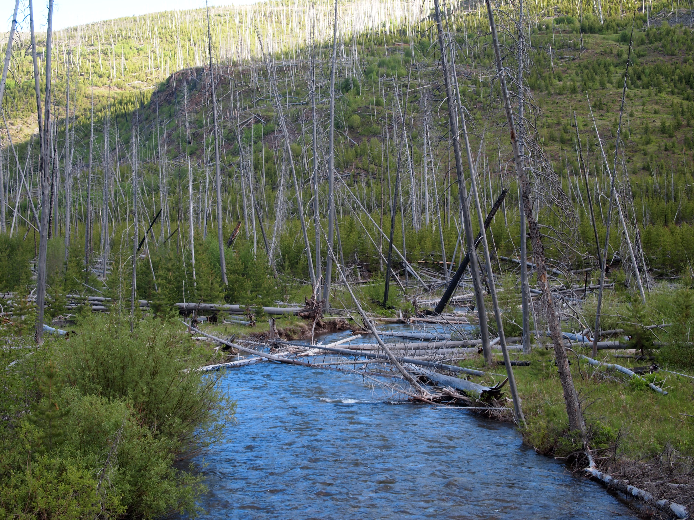
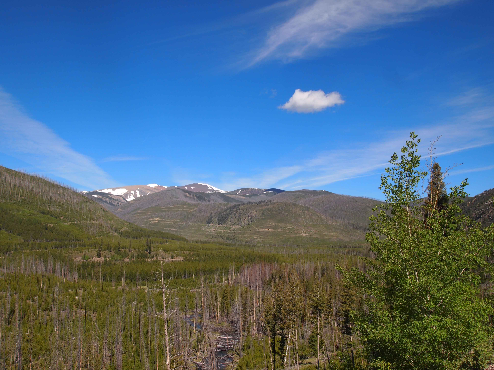
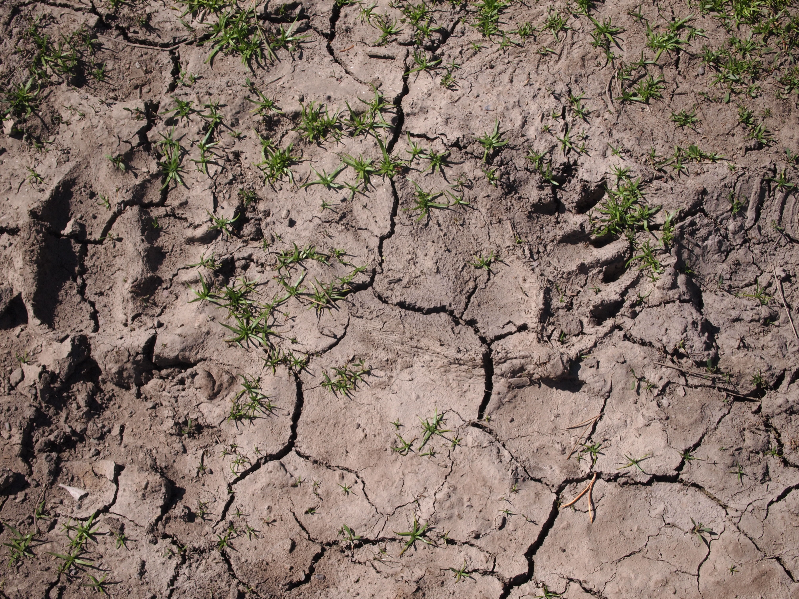
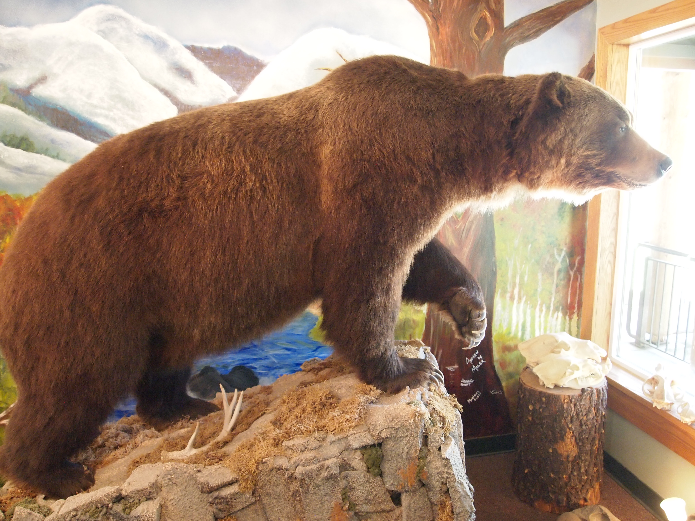
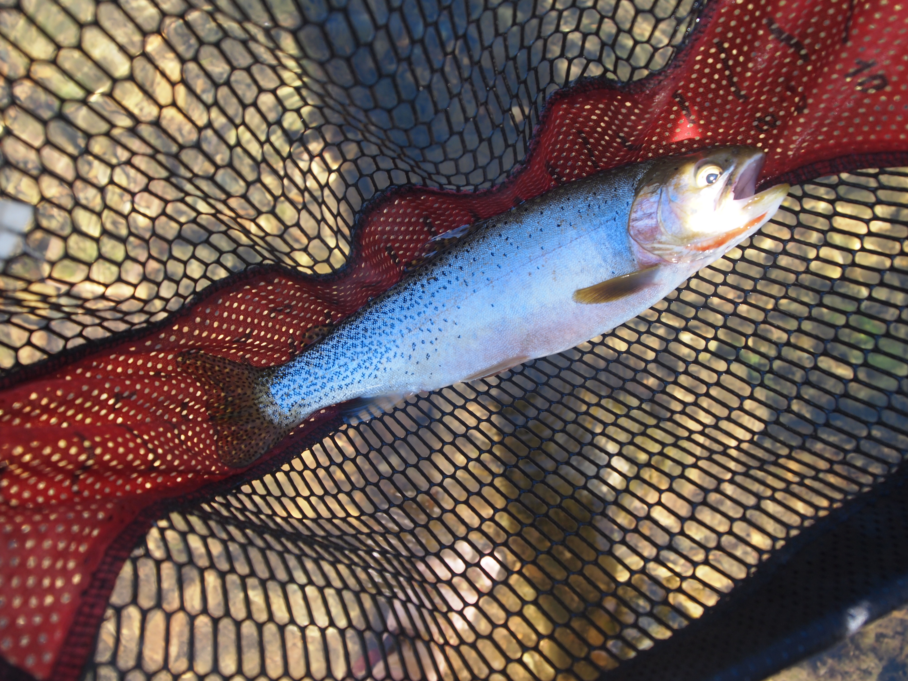

Western Native Trout Challenge
For whatever reason, I am not as excited for the Western Native Trout Challenge as I am for the state slams. I have been trying to put my finger on why, and I think it has something to do with the idea of becoming fully invested in a state, and learning about the different drainages. The WNTC is bigger for sure, but it feels a little more instrumental; it’s kind of like, here’s a list of fish all over the country, go catch them.
I will also admit that I find the rules incredibly confusing, and I’m wondering whether this sentiment is shared by others. What follows is a wonky discussion, but for those interested, I’ll explain why I think the WNTC rules are flawed. If you don’t care about this, you can skip to the next section.
The requirements for the first level, “expert angler” are simple enough: six fish in four different states. But after that, things get complicated. To complete the next step, “advanced angler,” you need to catch twelve fish in eight states, though the first six count. To put it differently, you must repeat the expert level with different fish species (you can submit the fish that you caught for the first level, but you cannot duplicate species for the second level). The problem arises with the limited list of fish provided by each of the states. For example, suppose I wanted to fish in Washington. That state only has three qualifying fish: Redband, Westslope, and Colorado River. Each of these fish are native to other states, and in fact I’ve already caught each of these fish for my first level, so I can’t use any fish from Washington to advance to the next level of “advanced angler.” New Mexico only has two fish, one of which is also one of Colorado’s two fish, and the other Colorado fish is the Colorado River, which is in three other states. By catching that fish in Utah, I’ve now eliminated Colorado as a state unless I catch the Rio Grande, which eliminates New Mexico as a state. I suppose I could catch the same species again and complete the lower level for a second time, but it becomes very difficult to plan trips to reach each of the next two steps because one runs out of states pretty quickly. In statistics, we would say there are not enough degrees of freedom to complete each of the three angler levels without repeating fish (or without going to Alaska).
I’m betting the challenge was setup this way after intense bargaining with each state’s Department of Fish and Game, and I imagine each state wants to direct people to certain places and certain fish. But this is all too much thinking for my taste. What I wish they would have done is made each fish-state combination a possible catch, then just said, to complete the first level you need to catch eight, second is catch 16, third is catch 22 (no pun intended). If you want to catch a bull trout in Idaho, Nevada, and Oregon, go for it, that’s three of eight. Or, if you want to catch five in Nevada and three in Utah, that’s enough for the “expert level”. If you want the next level, you need to catch another eight in other states. The eight fish requirement would have made the challenge “bigger” than any single state challenge and would have forced people to go to at least two states, and probably more. It also would have simplified things dramatically, and allowed anglers to fish wherever they wanted without having to backward induct where they might be or which fish they might catch in the future.
To make this a bit more concrete, I am planning to fish Oregon this summer (2023) and it would be nice to add some fish to complete the next level of the challenge. Here’s the problem. Oregon has five fish on the list, which is a lot, but none of these will help me reach the “advanced” angler step. I need to catch a bull trout from Nevada for that state’s challenge, so catching one in Oregon doesn’t do anything for me. Same story for the Coastal Cutthroat, which I need for California’s challenge. The other three, Lahontan, Redband, and Westslope, I have already caught in other states and submitted to complete my first challenge level.
As a result, I don’t know when, or even if, I will be able to complete the second level of the challenge. It probably won’t be anytime soon, and I’m planning on directing most of my attention to state challenges.
Previously Caught Fish
As noted above, the WNTC requires six fix across four states. A few of the fish I could use from completing my Utah, Wyoming, and Nevada slams, though I needed to submit a slightly different combination of fish given the Challenge’s rules about different fish from different states.
From previous slams, I submitted a Bonneville from the Logan River, Utah, and the Lahontan from Nevada. More details about the Utah and Nevada slams can be found here.
That is two fish from two states. The other two obvious states that I’ve fished quite a bit are Idaho and Wyoming. In Wyoming, the qualifying fish are the Bonneville, Colorado River, Westslope and Yellowstone. The Bonneville was out because I wanted to use that fish for Utah, the Westslope is also a a qualifying fish in Idaho, and the Yellowstone is a qualifying fish in Nevada and Wyoming. The only distinct fish between Idaho and Wyoming are the bull trout in Idaho, the Redband in Idaho, and the Colorado River in Wyoming. Basically, I’d need some combination of those fish between those two states. I’d already caught Colorado River and Yellowstone cutthroats in Wyoming for the Wyoming slam–now I had four fish from three states. Perhaps surprisingly, I had not caught any qualifying fish in Idaho. Any qualifying fish there would give me four states, and then I could submit any other fish from any state.
Aborted Attempt to Fish Near Lincoln, MT.
Fish number four I caught in the summer of 2019 during a family trip to Lake Coeur d’Alene. Before the start of the trip, I left a week early and drove through the eastern part of Idaho into Montana, with plans to fish the Lincoln and Ovando, MT areas. From there, I would pick up the 90, and drive to the Idaho panhandle, fishing some rivers there. This did not work as expected, and in fact, the trip went very poorly, right up to the point where it went great.
I was not in charge of scheduling the stay on Lake Coeur d’Alene and I was worried about my fishing plan because it was still very early in the season, around June 15th. I suspected the larger rivers like the Blackfoot and Clark Fork would still be blown out, and when I got to the area it was clear they were still unfishable. Instead, my planned first stop was a forest service campground on a small creek called Copper Creek. The scenery and campground were nice enough but on arrival, I saw that the drainage had semi-recently burned. As a result, there were downed trees all over the creek. It was almost impossible to wade for any period of time, and while I’m sure a more determined angler could have made it work, I gave up pretty quickly. The creek was high, the downfall was bad, and I’d drive all day and it was getting dark.
 Copper Creek, Montana. The deadfall and high water made it almost impossible to fish.
 Looking down on the Copper Creek drainage and toward the Scapegoat Wilderness.
I spent the night in the campground and had plans the next morning to hike to Landers Fork, which was about two miles from the trailhead near the campground. Two things happened that prevented this. The first is that I very quickly developed a weird cramp in my foot that made hiking difficult. As I was debating whether or not to turn around and hike back to my car, the second thing happened: I saw a relatively fresh, massive grizzly print on the trail. If ever the universe was giving me a sign, that was it. I turned around, got in my car, and left Copper Creek to continue my drive to Idaho.
 Time to turn around! While the mud around the track was dry, the tracks themselves appeared relatively fresh–maybe a week old, at most.
I have never seen a grizzly up close in the lower 48. I saw a young black bear from about one hundred yards hiking in the Salt River Range in Wyoming, and I saw a black spot, from maybe a mile away, beelining over a pass (and toward me) in the Gros Ventre Range above Granite Hot Springs. I’m not sure it was a grizzly bear, and I’m not even sure it was a bear at all, but it was big and fast, and didn’t move like an ungulate. Incidentally two years later, in 2021, a grizzly attacked and killed a camper in the town of Ovando, MT. The Lincoln Ranger office in Lincoln, MT has a very large grizzly bear on display.
 The grizzly on display in the Lincoln. MT ranger station.
Coeur d’Alene River–Westslope Cutthroat
I arrived on the North Fork of the Coeur d’Alene too late in the day to do much fishing, but I was the only person staying at Honeysuckle Campground. Things were looking up, until I saw that the fee for the campground was $24 a night! How could it be so expensive when no one was there? And how could a national forest service campground cost so much in general? I don’t think I’ve ever paid more than about $16 for one of these campgrounds and I refused to pay it on principle. I resolved the next day to leave the campground and find dispersed camping in the area. I had plans to drive over a ridge and down into the Teepee Creek watershed which eventually flowed into the mainstem Coeur d’Alene. I’d read online that fishing was good in Teepee and I’ve always enjoyed fishing smaller waters (online sources refer to it as both “Tepee” and “Teepee”).
The fishing was decent on Teepee Creek. I packed up camp and made the short drive over to the creek, and began fishing a meadow near a research station of some kind. It was a little high, and I didn’t have any success on dry flies, so I switched to a dry dropper setup. I lost one nice fish, then hooked another. Regrettably, I took almost no pictures on this trip for some reason, so in lieu of a Teepee Creek picture, here is one of the fish I caught, about a 15 inch Westslope Cutthroat.
 My first Westslope Cutt from Teepee Creek.
Things began to warm up and I couldn’t get any more action on Teepee Creek so I made the decision to drive farther down the forest road, which would take me back to the mainstem Couer d’Alene, then back out to the highway and where the North Fork and Coeur d’Alene met. The North Fork meets the mainstem just outside of Caltado, Idaho and despite being early in the season, both rivers were at summer flows. The drive up the North Fork to Honeysuckle, then over to Teepee, and back down the mainstem would make a big loop back to Caltado and the freeway. I needed to get back to civilization anyway to make a phone call, and I still had to find a dispersed camping site. I made a few stops to fish along the Coeur d’Alene, but I didn’t have any success.
It was crowded, as most holes had a guy or two in them, and there were a lot of people driving the road looking for spots. This suggested to me that the river sees a lot of pressure. It’s big enough, but the water miles alongside the road are somewhat limited so I think the fish in the obvious holes see a lot of flies. There are also lots of other people recreating, swimming in the river, wading, etc., which isn’t necessarily the best for fishing. Despite it being early June, it was also very hot. In fact, the temperature reached 105, or close to it, in the town of Coeur d’Alene. That’s also not good for the fishing. After a few frustrating hours, a lot of which was spent just trying to find some space on the river, I gave up.
I started back up the road to Honeysuckle Campground, off the mainstem and onto the North Fork to find a spot to disperse camp. There was a tiny turnoff in the road, which didn’t look like much, but beneath the turnout, in the trees, was an obvious camping area. I found my free spot at last. After setting up camp, I walked down to the river in the evening and fished a little. I didn’t have much success until I came to a small, obvious-looking pool that looked like it would hold fish. I caught a few, tiny trout, though a moose did appear out of the timber on the other side of the river from me. Despite the lack of fishing excitement, that was one of those experiences that make it all worth while. Shortly after the moose left, I heard a noise from behind me and expected another moose, but it was two other fisherman. I’m not even sure where they came from as the road was up the hill and there weren’t any other campsites around. Was there nowhere on this river where I would have some space to myself? I gave up the hole to them as I wasn’t having much success and went back to my camp.
The next morning I was supposed to meet the family in Harrison, on the lake. I was frustrated after the previous day and my plan was to just pack up and leave. I packed up, but made the last minute decision to fish in the morning, and try once again to catch a fish in the North Fork Coeur d’Alene. I walked down to the river above a bridge and began wading upstream. I’d tried a lot of different combinations of flies and setups, but because I wasn’t expecting much and was being lazy, I had a size 12 or 14 caddis on. I pretty quickly caught some small cutts in a shallow section of the river, which encouraged me to wade farther upstream. In a nice looking hole, I made a cast, and a massive fish took the fly. It was more than 15 inches and fought hard. Eventually I landed the fish in my net, and saw that it had another fly with broken line in its mouth. I removed my fly, got the other fly out, and released the fish. I’d actually caught a large Westslope Cutthroat in the North Fork. It was all gravy from there, and I waded upstream and caught more large fish. That turned out to be one of my best days of fishing ever.
Is the Coeur d’Alene a good trout river? I have no idea as I didn’t have any success for about the first ten hours I fished (yes, I hooked two cutts in Teepee Creek), but the last four or so were magical. I’m not sure what changed, other than my fly. It is crowded, and I don’t like crowds, but clearly if you can find the right spots with the right fish, there are some fish worth catching. And, after all that, the Idaho Westslope gave me five fish from four states.